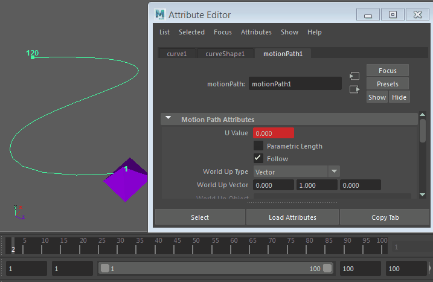

可以在两个位置标记之间更改对象在完整运动路径或部分路径上的移动速度。
速度更改通过调整位置标记之间的帧数来实现，因为对象每秒移动的帧数始终相同。在标记之间设置较少的帧，对象将加快移动速度；设置较多的帧，对象将减速。
调整沿完整路径的速度
- 在“范围滑块”(Range Slider)中，将“播放结束时间”(Playback End Time)设置为较低的值以加快移动速度，或者设置为较高的值以减慢移动速度。
- 在场景视图中，单击运动路径末端的位置标记。
- 在“属性编辑器”(Attribute Editor)中，单击位置标记（通常是 positionMarkerShape2）对应的选项卡。
- 在“位置标记属性”(Position Marker Attributes)下，将“时间”(Time)值设置为“播放结束时间”(Playback End Time)中使用的相同数字。

调整部分路径中的速度
- 在时间滑块中，单击希望对象开始更改速度的帧。
- 在通道盒中，展开 motionPath 属性，然后如下所示在运动路径的“U 值”(U Value)上设置关键帧：在(U Value > Key Selected)上单击鼠标右键。
位置标记已添加到路径中。
- 在时间滑块中，单击希望对象恢复标准速度的帧。
- 通过在(U Value > Key Selected)上单击鼠标右键，在运动路径该点处的“U 值”(U Value)上设置另一个关键帧。
另一个位置标记已添加到路径中。
- 选择第二个位置标记，然后单击“工具箱”(Tool Box)中的“移动工具”(Move Tool)。
该标记上将显示一个黄色框。
- 在“属性编辑器”(Attribute Editor)中，单击位置标记 (positionMarkerShapen) 对应的选项卡，然后展开“位置标记属性”(Position Marker Attributes)。
- 为该标记设置新的“时间”(Time)值，减小或增加此值可以加快或减慢对象的移动速度。
提示： 也可以通过沿运动路径滑动位置标记来调整对象速度，但是该方法不太精确，会影响所有相邻的方向标记。如果移动两个位置标记使其彼此靠近，则对象会在这部分路径中减速；如果标记散布开，则对象会加速。